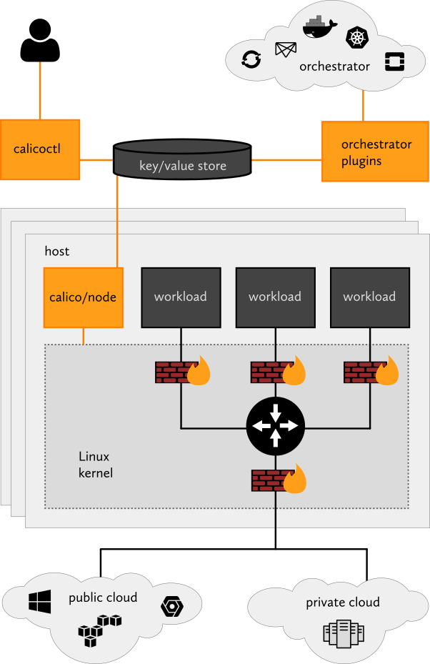

Container-Netzwerkschnittstelle (CNI)-Anbieter
Was ist CNI?
CNI (Container-Netzwerkschnittstelle), ein Projekt der Cloud Native Computing Foundation, besteht aus einer Spezifikation und Bibliotheken zum Schreiben von Plugins zur Konfiguration von Netzwerkschnittstellen in Linux-Containern, zusammen mit einer Reihe von Plugins. CNI beschäftigt sich ausschließlich mit der Netzwerkverbindung von Containern und der Freigabe zugewiesener Ressourcen, wenn der Container gelöscht wird.
Kubernetes verwendet CNI als Netzwerkschnittstelle zwischen Netzwerkanbietern und der Kubernetes-Pod-Netzwerkverbindung.
Für weitere Informationen besuchen Sie das CNI GitHub-Projekt.
Welche Netzwerkmodelle werden in CNI verwendet?
CNI-Netzwerkanbieter implementieren ihr Netzwerk-Framework entweder mit einem gekapselten Netzwerkmodell wie Virtual Extensible Lan (VXLAN) oder einem unkapselten Netzwerkmodell wie Border Gateway Protocol (BGP).
Was ist ein gekapseltes Netzwerk?
Dieses Netzwerkmodell bietet ein logisches Layer 2 (L2) Netzwerk, das über die bestehende Layer 3 (L3) Netzwerktopologie, die die Kubernetes-Cluster-Knoten überspannt, gekapselt ist. Mit diesem Modell erhalten Sie ein isoliertes L2-Netzwerk für Container, ohne dass eine Routing-Verteilung erforderlich ist – allerdings auf Kosten eines minimalen Overheads in Bezug auf die Verarbeitung und einer erhöhten IP-Paketgröße, die durch Overlay-Kapselung entsteht. Die Kapselungsinformationen werden über UDP-Ports zwischen Kubernetes-Arbeitern verteilt, um Steuerungsinformationen darüber auszutauschen, wie MAC-Adressen erreicht werden können. Häufig verwendete Kapselungen in diesem Netzwerkmodell sind VXLAN, Internet Protocol Security (IPSec) und IP-in-IP.
Einfach ausgedrückt erzeugt dieses Netzwerkmodell eine Art Netzwerkrouter, der zwischen Kubernetes-Arbeitern ausgedehnt wird und Informationen darüber bereitstellt, wie Pods erreicht werden können.
Dieses Netzwerkmodell wird verwendet, wenn eine erweiterte L2-Brücke bevorzugt wird. Dieses Netzwerkmodell ist empfindlich gegenüber L3-Netzwerklatenzen der Kubernetes-Arbeiter. Wenn Rechenzentren an unterschiedlichen geografischen Standorten liegen, stellen Sie sicher, dass die Latenzen zwischen ihnen niedrig sind, um eine eventuelle Netzwerksegmentierung zu vermeiden.
CNI-Netzwerkanbieter, die dieses Netzwerkmodell verwenden, sind Flannel, Canal, Weave und Cilium. Standardmäßig verwendet Calico dieses Modell nicht, kann jedoch so konfiguriert werden, dass es dies tut.

Was ist ein unkapseltes Netzwerk?
Dieses Netzwerkmodell bietet ein L3-Netzwerk, um Pakete zwischen Containern zu routen. Dieses Modell erzeugt weder ein isoliertes L2-Netzwerk noch Overhead. Diese Vorteile gehen mit dem Nachteil einher, dass Kubernetes-Arbeiter jede erforderliche Routenverteilung verwalten müssen. Anstatt IP-Header für die Kapselung zu verwenden, nutzt dieses Netzwerkmodell ein Netzwerkprotokoll zwischen Kubernetes-Arbeitern, um Routinginformationen zu verteilen, um Pods zu erreichen, wie BGP.
Einfach ausgedrückt erzeugt dieses Netzwerkmodell eine Art Netzwerkrouter, der zwischen Kubernetes-Arbeitern ausgedehnt wird und Informationen darüber bereitstellt, wie Pods erreicht werden können.
Dieses Netzwerkmodell wird verwendet, wenn ein geroutetes L3-Netzwerk bevorzugt wird. Dieser Modus aktualisiert Routen dynamisch auf Betriebssystemebene für Kubernetes-Arbeiter. Es ist weniger empfindlich gegenüber Latenz.
CNI-Netzwerkanbieter, die dieses Netzwerkmodell verwenden, sind Calico und Cilium. Cilium kann mit diesem Modell konfiguriert werden, obwohl es nicht der Standardmodus ist.

Welche CNI-Anbieter werden von Rancher bereitgestellt?
SUSE® Rancher Prime: RKE2 Kubernetes-Cluster
Out-of-the-box bietet Rancher die folgenden CNI-Netzwerkanbieter für RKE2 Kubernetes-Cluster an: Calico, Canal, Cilium und Flannel.
Sie können Ihren CNI-Netzwerkanbieter auswählen, wenn Sie neue Kubernetes-Cluster aus Rancher erstellen.
Calico
Calico ermöglicht Networking und Netzwerkrichtlinien in Kubernetes-Clustern in der Cloud. Standardmäßig verwendet Calico ein reines, nicht gekapseltes IP-Netzwerk-Framework und eine Richtlinien-Engine, um Networking für Ihre Kubernetes-Workloads bereitzustellen. Workloads können sowohl über die Cloud-Infrastruktur als auch über On-Premises mit BGP kommunizieren.
Calico bietet auch einen zustandslosen IP-in-IP- oder VXLAN-Kapselungsmodus, der bei Bedarf verwendet werden kann. Calico bietet zudem Richtlinienisolierung, die es Ihnen ermöglicht, Ihre Kubernetes-Workloads mit fortschrittlichen Eingangs- und Ausgangsrichtlinien zu sichern und zu verwalten.
Kubernetes-Arbeiter sollten den TCP-Port 179 öffnen, wenn BGP verwendet wird, oder den UDP-Port 4789, wenn VXLAN-Kapselung verwendet wird. Darüber hinaus wird der TCP-Port 5473 benötigt, wenn Typha verwendet wird. Siehe die Portanforderungen für Benutzercluster für weitere Details.
|
Wichtig:
In Rancher v2.6.3 schlagen die Calico-Proben auf Windows-Knoten bei der RKE2-Installation fehl. Beachten Sie, dass dieses Problem in v2.6.4 behoben ist.
|

Für weitere Informationen siehe die folgenden Seiten:
Canal
Canal ist ein CNI-Netzwerkanbieter, der Ihnen das Beste aus Flannel und Calico bietet. Es ermöglicht Benutzern, Calico und Flannel-Netzwerke einfach als eine einheitliche Netzwerklösung bereitzustellen, indem Calicos Durchsetzung der Netzwerkrichtlinien mit dem umfangreichen Angebot an Netzwerkverbindungsoptionen von Calico (unkapselt) und/oder Flannel (gekapselt) kombiniert wird.
In Rancher ist Canal der standardmäßige CNI-Netzwerkanbieter, kombiniert mit Flannel und VXLAN-Kapselung.
Kubernetes-Arbeiter sollten den UDP-Port 8472 (VXLAN) und den TCP-Port 9099 (Gesundheitsprüfungen) öffnen. Wenn Sie Wireguard verwenden, sollten Sie die UDP-Ports 51820 und 51821 öffnen. Für weitere Details verweisen Sie auf die Portanforderungen für Benutzercluster.

Für weitere Informationen verweisen Sie auf die von Rancher verwaltete Canal-Quelle und die Canal GitHub-Seite.
Cilium
Cilium ermöglicht Netzwerk- und Netzwerkrichtlinien (L3, L4 und L7) in Kubernetes. Standardmäßig verwendet Cilium eBPF-Technologien, um Pakete innerhalb des Knotens zu routen und VXLAN, um Pakete an andere Knoten zu senden. Unkapselungstechniken können ebenfalls konfiguriert werden.
Cilium empfiehlt Kernelversionen größer als 5.2, um das volle Potenzial von eBPF nutzen zu können. Kubernetes-Arbeiter sollten den TCP-Port 8472 für VXLAN und den TCP-Port 4240 für Gesundheitsprüfungen öffnen. Darüber hinaus muss ICMP 8/0 für Gesundheitsprüfungen aktiviert sein. Für weitere Informationen überprüfen Sie Cilium-Systemanforderungen.
Flannel
Flannel ist eine einfache und unkomplizierte Möglichkeit, ein L3-Netzwerk-Framework zu konfigurieren, das für Kubernetes entwickelt wurde. Flannel führt einen einzelnen Binäragenten namens flanneld auf jedem Host aus, der dafür verantwortlich ist, jedem Host aus einem größeren, vorkonfigurierten Adressraum eine Subnetz-Lease zuzuweisen. Flannel verwendet entweder die Kubernetes-API oder etcd direkt, um die Netzwerkkonfiguration, die zugewiesenen Subnetze und alle Hilfsdaten (wie die öffentliche IP des Hosts) zu speichern. Pakete werden mit einem der mehreren Backend-Mechanismen weitergeleitet, wobei die Standardkapselung VXLAN ist.
Kapselter Verkehr ist standardmäßig unverschlüsselt. Flannel bietet zwei Lösungen für die Verschlüsselung:
-
IPSec, das strongSwan verwendet, um verschlüsselte IPSec-Tunnel zwischen Kubernetes-Arbeitern einzurichten. Es ist ein experimentelles Back-End für die Verschlüsselung.
-
WireGuard, das eine deutlich schnellere Alternative zu strongSwan darstellt.
Kubernetes-Arbeiter sollten den UDP-Port 8472 (VXLAN) öffnen. Siehe die Portanforderungen für Benutzercluster für weitere Details.

Für weitere Informationen siehe die Flannel GitHub-Seite.
Ingress-Routing über Knoten in Cilium
Standardmäßig erlaubt Cilium Pods nicht, mit Pods auf anderen Knoten zu kommunizieren. Um dies zu umgehen, aktivieren Sie den Ingress-Controller, um Anfragen über Knoten mit einem CiliumNetworkPolicy zu routen.
Nachdem Sie das Cilium CNI ausgewählt und die Projekt-Netzwerkisolierung für Ihren neuen Cluster aktiviert haben, konfigurieren Sie wie folgt:
apiVersion: cilium.io/v2
kind: CiliumNetworkPolicy
metadata:
name: hn-nodes
namespace: default
spec:
endpointSelector: {}
ingress:
- fromEntities:
- remote-nodeCNI-Funktionen nach Anbieter
Die folgende Tabelle fasst die verschiedenen Funktionen zusammen, die für jeden CNI-Netzwerkanbieter von Rancher verfügbar sind.
| Anbieter | Netzwerkmodell | Routenverteilung | Netzwerkrichtlinien | Netz | Externer Datenspeicher | Verschlüsselung | Ingress/Egress-Richtlinien |
|---|---|---|---|---|---|---|---|
Canal |
Kapselung (VXLAN) |
Nein |
Ja |
Nein |
K8s API |
Ja |
Ja |
Flannel |
Kapselung (VXLAN) |
Nein |
Nein |
Nein |
K8s API |
Ja |
Nein |
Calico |
Kapselung (VXLAN, IPIP) ODER Unkapselung |
Ja |
Ja |
Ja |
Etcd und K8s API |
Ja |
Ja |
Weave |
Kapselung |
Ja |
Ja |
Ja |
Nein |
Ja |
Ja |
Cilium |
Kapselung (VXLAN) |
Ja |
Ja |
Ja |
Etcd und K8s API |
Ja |
Ja |
-
Netzwerkmodell: Kapselung oder Unkapselung. Für weitere Informationen siehe Welche Netzwerkmodelle werden in CNI verwendet?
-
Routenverteilung: Ein externes Gateway-Protokoll, das zum Austausch von Routing- und Erreichbarkeitsinformationen im Internet entwickelt wurde. BGP kann die Pod-zu-Pod-Vernetzung zwischen Clustern unterstützen. Dieses Feature ist ein Muss für unkapselte CNI-Netzwerkanbieter und wird typischerweise von BGP durchgeführt. Wenn Sie planen, Cluster über Netzwerksegmente hinweg zu erstellen, ist die Routenverteilung ein wünschenswertes Feature.
-
Netzwerkrichtlinien: Kubernetes bietet Funktionen zur Durchsetzung von Regeln, welche Dienste miteinander kommunizieren können, unter Verwendung von Netzwerkrichtlinien. Dieses Feature ist seit Kubernetes v1.7 stabil und bereit zur Verwendung mit bestimmten Netzwerk-Plugins.
-
Netz: Dieses Feature ermöglicht die Kommunikation zwischen Diensten in verschiedenen Kubernetes-Clustern.
-
Externer Datenspeicher: CNI-Netzwerkanbieter mit diesem Feature benötigen einen externen Datenspeicher für ihre Daten.
-
Verschlüsselung: Dieses Feature ermöglicht verschlüsselte und sichere Netzwerksteuerungs- und Datenebenen.
-
Ingress/Egress-Richtlinien: Dieses Feature ermöglicht es Ihnen, die Routingkontrolle sowohl für Kubernetes- als auch für Nicht-Kubernetes-Kommunikationen zu verwalten.
CNI-Community-Popularität
The following table summarizes different GitHub metrics to give you an idea of each project’s popularity and activity levels. This data was collected in December 2025.
| Provider | Project | Stars | Forks | Contributors |
|---|---|---|---|---|
Canal |
721 |
96 |
20 |
|
Flannel |
9.5k |
2.9k |
249 |
|
Calico |
7.3k |
1.6k |
416 |
|
Weave |
6.6k |
676 |
82 |
|
Cilium |
24.6k |
3.8k |
1108 |
Welchen CNI-Anbieter sollte ich verwenden?
Es hängt von den Anforderungen Ihres Projekts ab. Es gibt viele verschiedene Anbieter, die jeweils verschiedene Funktionen und Optionen haben. Es gibt keinen Anbieter, der die Bedürfnisse aller erfüllt.
Canal ist der Standard-CNI-Netzwerkanbieter. Wir empfehlen ihn für die meisten Anwendungsfälle. Er bietet gekapseltes Networking für Container mit Flannel und fügt Calico-Netzwerkrichtlinien hinzu, die eine Projekt- bzw. Namespace-Isolation in Bezug auf das Networking bieten können.
Wie kann ich einen CNI-Netzwerkanbieter konfigurieren?
Bitte sehen Sie sich Cluster-Optionen an, um zu erfahren, wie Sie einen Netzwerkanbieter für Ihren Cluster konfigurieren können. Für fortgeschrittene Konfigurationsoptionen sehen Sie bitte nach, wie Sie Ihren Cluster mit einer Konfigurationsdatei konfigurieren.